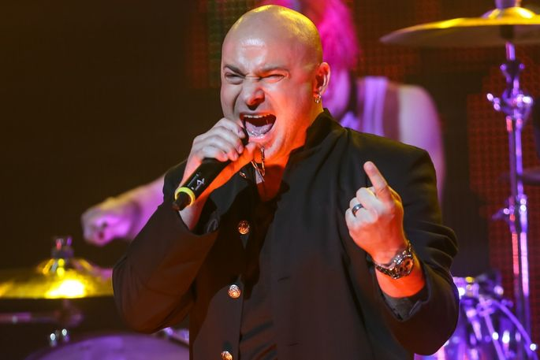
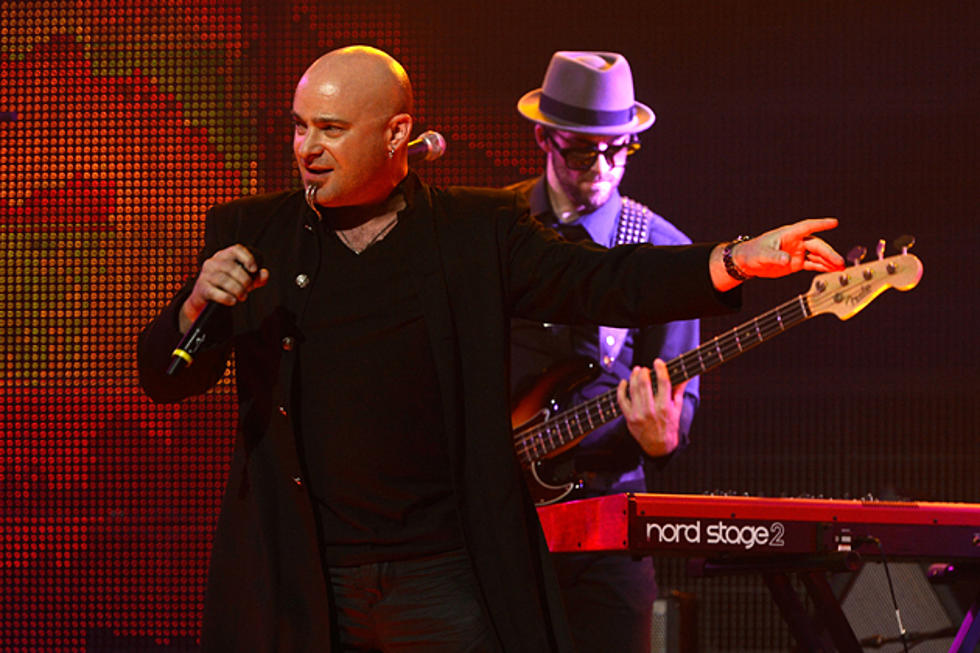
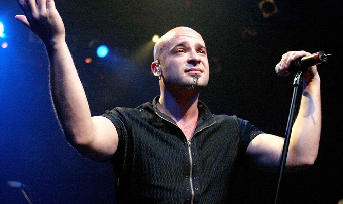
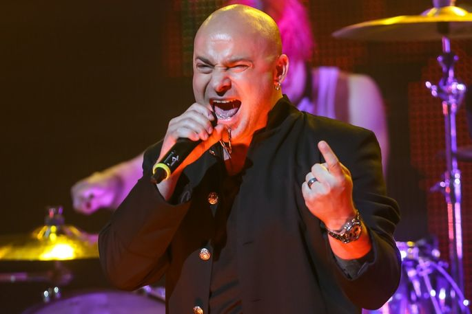
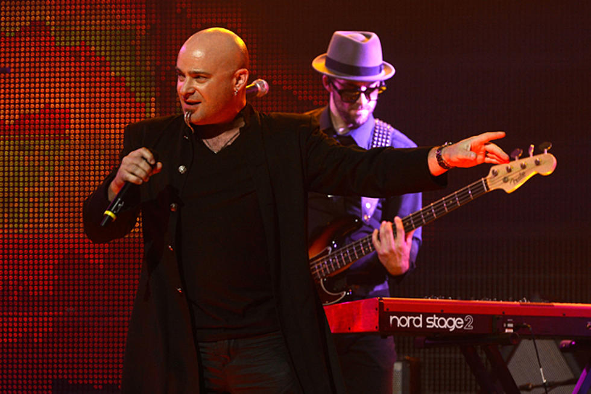
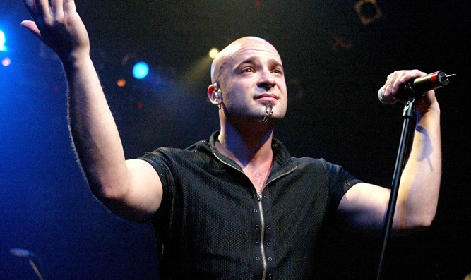

David Michael Draiman (born March 13, 1973) is an American singer and songwriter; he is the lead singer of Disturbed and Device. Draiman has a distorted, operatic baritone voice and percussive singing style. In November 2006, Draiman was voted number 42 on the Hit Parader's "Top 100 Metal Vocalists of All Time". Draiman has written some of Disturbed's most successful singles, such as "Stupify", "Down with the Sickness", "Indestructible", and "Inside the Fire".
In October 2011, Disturbed went on hiatus, and Draiman worked on an industrial rock/metal project with Geno Lenardo (former guitarist of Filter), which was later named Device; they released one album, in 2013. In June 2015, Disturbed returned with a single and a new album, Immortalized. In 2018, Disturbed released Evolution.
After graduating from college, Draiman worked as an administrative assistant in a healthcare facility. After his first year, he earned an administrator's license and commenced running his own healthcare facility. For five years before joining Disturbed and the band's signing with Giant Records, Draiman was a healthcare administrator. Leaving that position strained his relationship with his grandfather, a traditional Hasidic Jew.
Draiman said, "the first record I ever bought was Kiss’ Destroyer. And those classic bands like Black Sabbath were my first loves ... I focused on the seminal metal bands like Metallica, Iron Maiden, Pantera and Queensrÿche".
Draiman continues, "But I could also appreciate the hair metal bands – When you hear Whitesnake, you can’t deny their greatness. Then I went in the direction of punk and new wave, groups like the Sex Pistols, The Ramones, The Misfits and later The Smiths and The Cure – that was my '80s".
"And then when the grunge revolution happened, it was like a wakeup call. I'll never forget getting my first Nirvana, Soundgarden and Alice in Chains records".